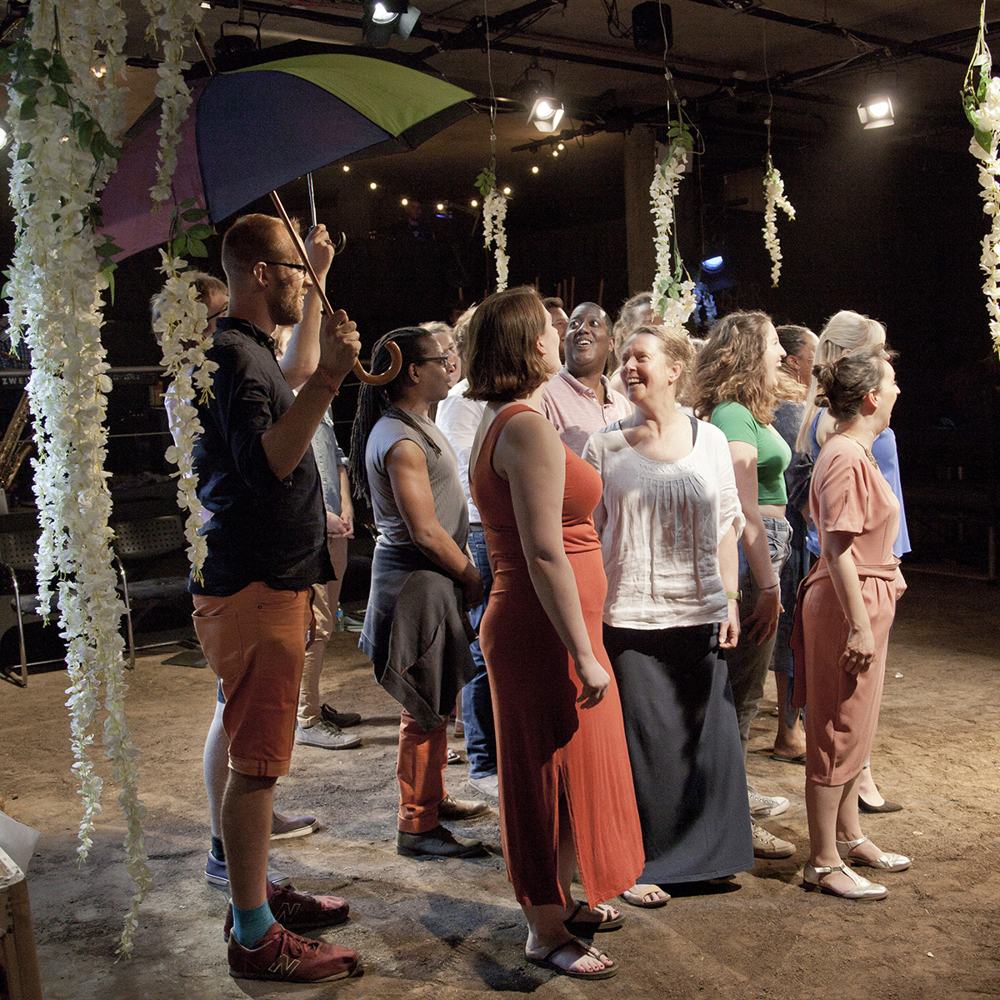

ABOUT THE COLLECTIVE
The Collective was formed in 2016 as a choir for choir directors.
The plan was to offer them a chance to network, discover new repertoire and skills, and to sing with like-minded professionals.
Since then The Collective has expanded to include composers, lyricists, actors and singers of diverse backgrounds, and the group’s remit has expanded to include running regular open-access singing workshops.


| The Collective gave its first public performances in August 2016 at All Hallows by the Tower and St Mary's Church Putney, in two collaborative concerts with the PopUp Choir of Minneapolis, USA.
The repertoire ranged from Renaissance polyphony to jazz standards and featured the UK premiere of US composer Jocelyn Hagen's 'To See the Sky'. |
| In June 2017, The Collective took over The Bunker Theatre in London Bridge for a night of gospel, soul, pop and musical theatre songs. You can hear clips of this concert on our LISTEN page. |